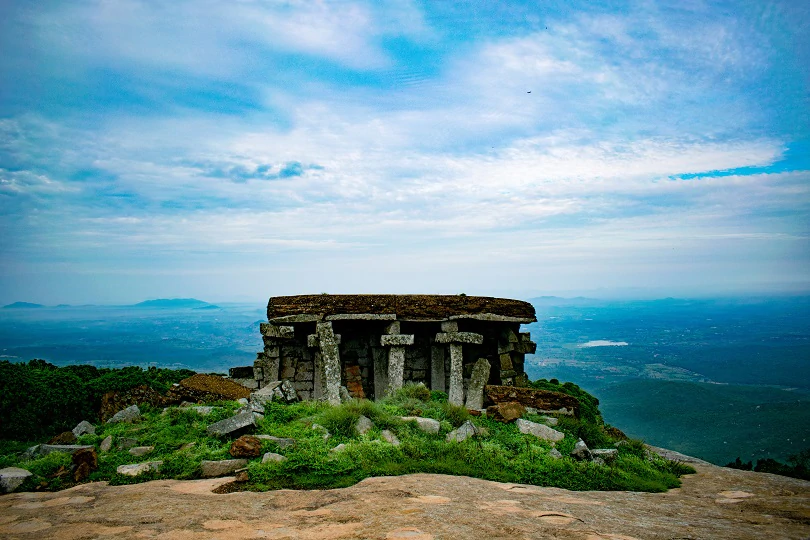
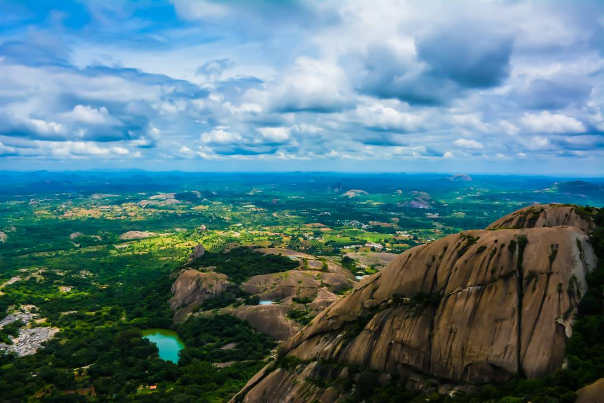
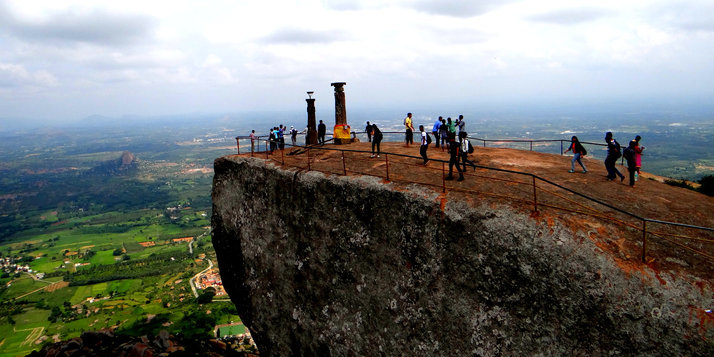
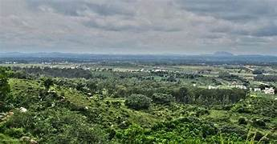
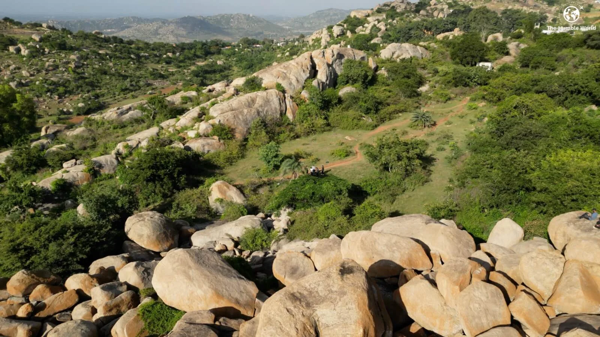
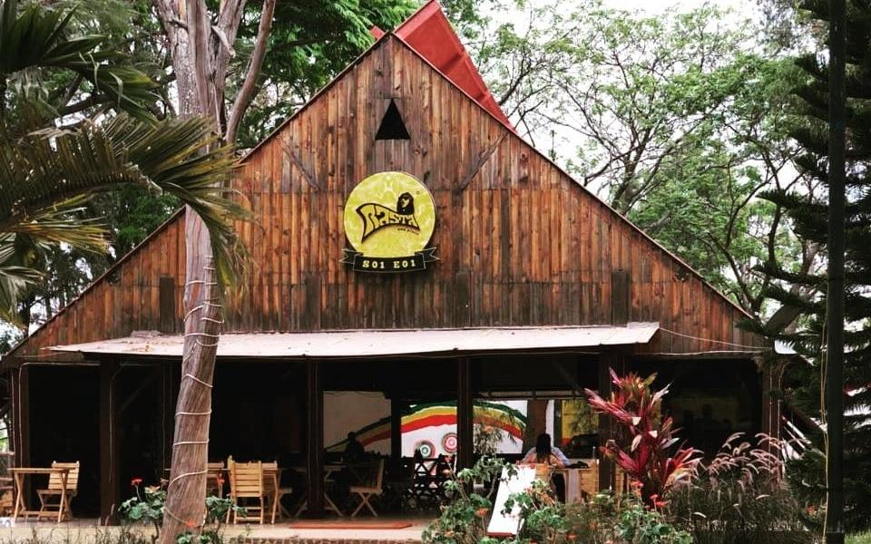
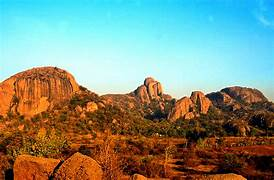

Your ultimate guide to weekend adventures, hidden cafés, and quick getaways around Bangalore.
Life in Bangalore moves fast—traffic, deadlines, classes, and never-ending hustle. But just a short drive or even a walk away, the city hides countless treasures: misty hilltops, cozy cafés, and peaceful green corners. At WanderMiles, we bring you curated experiences that refresh your soul without the need for long holidays.
In this blog, we’ve explored the best treks, cafés, and gateways that are perfect for short breaks. Whether you’re a student, a young professional, or simply someone who loves exploring, these recommendations are designed for you.
Just 60 km from the city, Nandi Hills is Bangalore’s most loved sunrise destination. The winding drive up the hill is as magical as the golden rays breaking through the clouds. Early mornings bring misty air, roadside chai stalls, and stunning views from Tipu’s Drop.
Best For: Sunrise seekers, photographers, cyclists.
Travel Tip: Start before 4:30 AM to catch the sunrise without heavy crowds.

Known as Kalavara Durga, Skandagiri is famous for its night trek. Starting around midnight, the 5 km trek takes you through forest trails, leading to an unforgettable sunrise above the clouds.
Best For: Adventure groups, stargazers, night owls.
Travel Tip: Carry torches, water, and a jacket—the wind is strong at the top..

Towering at 1,226 meters, Savandurga is among Asia’s largest monoliths. The rocky climb is moderately difficult but offers wide views of rivers, forests, and nearby temples.
Best For: Rock climbing, weekend adventure.
Travel Tip: Avoid trekking during summer afternoons—it gets extremely hot.

This hill, shaped like a Shiva Linga, is a blend of spirituality and adventure. Along the climb, you’ll encounter temples, cave passages, and panoramic views. It’s both a pilgrimage and a trek.
Best For:Trekkers who enjoy spiritual vibes.
Travel Tip:> Respect temple customs, especially during festivals.

A short 20-minute drive from Bangalore, Turahalli is ideal for quick morning treks or cycling. Known as the “lung space of Bangalore,” it’s a favorite spot for nature lovers and fitness enthusiasts.
Best For: Cycling, bird watching, short nature walks.
Travel Tip: Visit early morning to enjoy the forest’s calm and spot birds.

About 70 km away, Anthargange offers unique volcanic rock formations and cave exploration. The trek is short but thrilling, with caves that require crawling and climbing.
Best For: Adventure lovers, cave explorers.
Travel Tip: Hire a guide for cave exploration—it’s easy to get lost inside.

On the Bangalore–Mysore road, Rasta Café has been a go-to hangout spot for years. Open late into the night, it’s perfect for road trips and long conversations over coffee and fries.
Vibe: Roadside, vibrant, night-friendly.

Blending food and art, this café has rustic interiors, wooden furniture, and art-covered walls. It’s a cozy hideout for readers, artists, and anyone who loves a calm café atmosphere.
Vibe: Rustic, artistic, peaceful.

This Indiranagar gem is famous for its hearty breakfast platters, pancakes, and shakes. The cheerful ambiance makes it one of Bangalore’s most loved student cafés.
Vibe: Youthful, energetic, perfect for brunch.

Located on Church Street, Matteo is spacious and modern. Known for its signature cappuccinos and desserts, it’s a great place to work, read, or catch up with friends.
Vibe: Modern, urban, coffee-focused.

A heritage house turned café, Rogue Elephant has outdoor seating amidst greenery. It’s perfect for those who enjoy eating amidst nature.
Vibe: Green, relaxed, open-air.

This café has a unique charm—walls filled with art, occasional live music, and people sketching or reading. It’s ideal for creative souls looking for inspiration.
Vibe: Bohemian, artistic, student-friendly.

Close to Bannerghatta, Thattekere Lake is a peaceful spot surrounded by greenery. It’s an untouched gem, perfect for photography and quiet picnics.
Distance: ~40 km from Bangalore.

Once a major water reservoir, Hesaraghatta is now a peaceful expanse loved by birdwatchers and photographers. It’s especially beautiful during sunrise and sunset.
Distance: ~30 km from Bangalore.

Known for its rocky hills where the movie Sholay was shot, Ramanagara is ideal for rock climbing, trekking, and even bird watching.
Distance: ~50 km from Bangalore.

At Sangama, two rivers meet, and at Mekedatu, the river flows through narrow rocky gorges. It’s a refreshing day trip surrounded by nature.
Distance:~90 km from Bangalore.

A lesser-known waterfall near Kanakapura, Chunchi Falls is a perfect escape during the monsoon season. Surrounded by hills and greenery, it feels untouched and pure.
Distance: ~90 km from Bangalore.

Famous for its safari, butterfly park, and zoo, Bannerghatta is an easy getaway for wildlife lovers. You can spot tigers, lions, elephants, and more.
Distance: ~22 km from Bangalore.
Bangalore isn’t just India’s Silicon Valley—it’s also a city of hidden escapes. From early morning treks above the clouds to late-night café hangouts, and from peaceful lakes to waterfalls, the city offers countless micro-travel experiences.
At WanderMiles, we believe you don’t need long holidays to find adventure or peace. Sometimes, all it takes is a weekend, a few friends, and a little curiosity to discover the magic around you.